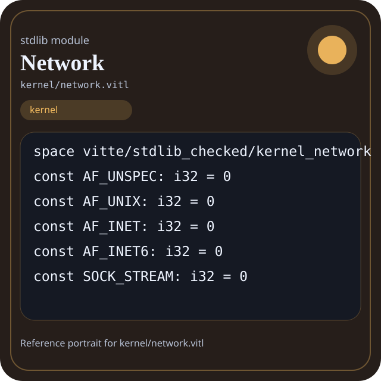

Stdlib module kernel/network.vitl
This page is a wiki-style reference for one concrete stdlib file. It explains what the file owns, where it fits in the family, and how to decide whether this is the right surface to depend on.

kernel/network.vitl.Family: kernel
Kind: public stdlib surface
Page style: this reference follows the same “encyclopedic card + portrait + usage contract” logic as the keyword pages, but for stdlib modules.
Summary
- Overview
- Purpose
- Taxonomy
- Implementation profile
- Top-level API inventory
- Position in family
- Declaration map
- Representative signatures
- How to use this module
- User example
- Keyword coverage
- Source shape
- Source landmarks
- Source organization
- Complete API catalog
- Integration boundaries
- Composition guidance
- Relationship table
- Neighbor modules
Overview
| Field | Value |
|---|---|
| Path | kernel/network.vitl |
| Family | kernel |
| Kind | public stdlib surface |
| Line count | 245 |
| Declared procedures | 42 |
| Declared forms/picks | 4 |
`kernel/network.vitl` is a public stdlib surface inside the `kernel` family. It should be read as one focused slice of the broader family responsibility: System-facing runtime helpers such as process, scheduler, threads, sync, users, signals, network, device, and memory.
Purpose
This file should be chosen because of responsibility, not because its name “sounds close enough”. Inside the kernel family, it carries one focused part of the contract and keeps that responsibility separate from neighboring concerns.
- A service manager may use scheduler, process, and signals while keeping policy in separate code.
- A network-facing runtime should explain why it depends on kernel surfaces instead of lighter families.
Taxonomy
Think of this page as a generated encyclopedia entry rather than a hand-written tutorial. The goal is to show what kind of module this is, how dense it is, and what reading strategy makes sense before depending on it.
- Large algorithm surface: this file exposes many procedures and likely acts as a domain toolkit rather than a single thin wrapper.
- Owns domain vocabulary: the module declares data shapes in addition to executable helpers, so its types are part of the contract.
- Has tuning constants: part of the module behavior is controlled by named constants that document default precision, limits, or policy.
- Minimal top-level dependencies: the module reads as mostly self-contained from its opening declarations.
Implementation profile
This profile is inferred directly from the source text. It does not replace reading the file, but it tells you quickly whether the module is mostly declarative, loop-heavy, branch-heavy, or organized around many small exits.
| Signal | Count | What it suggests |
|---|---|---|
if | 0 | Branching density and local decision-making. |
while | 0 | Loop-heavy or iterative implementation style. |
for | 0 | Collection-style traversal at source level. |
match | 0 | Variant-driven branching or grammar-style decoding. |
let | 0 | Local state and intermediate value density. |
give | 42 | Number of explicit exit points and result shaping. |
Top-level API inventory
| Surface | Items |
|---|---|
| Procedures | socket, bind, listen, accept, connect, close, shutdown, send, sendto, sendmsg, recv, recvfrom |
| Forms | IPv4Addr, IPv6Addr, SockAddr, HostEnt |
| Picks | none declared at top level |
| Constants | AF_UNSPEC, AF_UNIX, AF_INET, AF_INET6, SOCK_STREAM, SOCK_DGRAM, SOCK_RAW, SOCK_SEQPACKET, IPPROTO_IP, IPPROTO_ICMP, IPPROTO_TCP, IPPROTO_UDP |
| Exports | none declared at top level |
Imported surfaces
This file does not advertise a top-level `use` surface in its opening declarations. That often means it is either self-contained or an aggregation layer.
Position in family
This file is module 6 of 12 in the kernel family when ordered by path. By procedure count it ranks 3, and by line count it ranks 3. Those ranks are useful as rough signals of breadth, not as quality judgments.
Declaration map
The declaration map turns raw source into a scan-friendly catalog. It is useful when the file is large enough that a reader wants to orient by kinds of surfaces first.
| Line | Name | Kind | Role |
|---|---|---|---|
| 1 | vitte/stdlib_checked/kernel_network | space | Declares the namespace that anchors this file in the stdlib tree. |
| 9 | AF_UNSPEC | const | Defines a named constant reused across the module. |
| 11 | AF_UNIX | const | Defines a named constant reused across the module. |
| 13 | AF_INET | const | Defines a named constant reused across the module. |
| 15 | AF_INET6 | const | Defines a named constant reused across the module. |
| 17 | SOCK_STREAM | const | Defines a named constant reused across the module. |
| 19 | SOCK_DGRAM | const | Defines a named constant reused across the module. |
| 21 | SOCK_RAW | const | Defines a named constant reused across the module. |
| 23 | SOCK_SEQPACKET | const | Defines a named constant reused across the module. |
| 25 | IPPROTO_IP | const | Defines a named constant reused across the module. |
| 27 | IPPROTO_ICMP | const | Defines a named constant reused across the module. |
| 29 | IPPROTO_TCP | const | Defines a named constant reused across the module. |
| 31 | IPPROTO_UDP | const | Defines a named constant reused across the module. |
| 33 | SOL_SOCKET | const | Defines a named constant reused across the module. |
| 35 | SO_REUSEADDR | const | Defines a named constant reused across the module. |
| 37 | SO_KEEPALIVE | const | Defines a named constant reused across the module. |
| 39 | SO_SNDBUF | const | Defines a named constant reused across the module. |
| 41 | SO_RCVBUF | const | Defines a named constant reused across the module. |
| 43 | SO_LINGER | const | Defines a named constant reused across the module. |
| 45 | SO_TYPE | const | Defines a named constant reused across the module. |
| 47 | SO_ERROR | const | Defines a named constant reused across the module. |
| 49 | TCP_NODELAY | const | Defines a named constant reused across the module. |
| 51 | TCP_KEEPIDLE | const | Defines a named constant reused across the module. |
| 53 | TCP_KEEPINTVL | const | Defines a named constant reused across the module. |
| 55 | SHUT_RD | const | Defines a named constant reused across the module. |
| 57 | SHUT_WR | const | Defines a named constant reused across the module. |
| 59 | SHUT_RDWR | const | Defines a named constant reused across the module. |
| 61 | SOMAXCONN | const | Defines a named constant reused across the module. |
| 63 | IPv4Addr | form | Introduces a structured data shape that other procedures can exchange. |
| 67 | IPv6Addr | form | Introduces a structured data shape that other procedures can exchange. |
| 71 | SockAddr | form | Introduces a structured data shape that other procedures can exchange. |
| 75 | HostEnt | form | Introduces a structured data shape that other procedures can exchange. |
| 79 | socket | proc | Represents one top-level surface in the file contract and should be read as part of the module boundary. |
| 83 | bind | proc | Represents one top-level surface in the file contract and should be read as part of the module boundary. |
| 87 | listen | proc | Represents one top-level surface in the file contract and should be read as part of the module boundary. |
| 91 | accept | proc | Represents one top-level surface in the file contract and should be read as part of the module boundary. |
| 95 | connect | proc | Represents one top-level surface in the file contract and should be read as part of the module boundary. |
| 99 | close | proc | Represents one top-level surface in the file contract and should be read as part of the module boundary. |
| 103 | shutdown | proc | Represents one top-level surface in the file contract and should be read as part of the module boundary. |
| 107 | send | proc | Represents one top-level surface in the file contract and should be read as part of the module boundary. |
| 111 | sendto | proc | Represents one top-level surface in the file contract and should be read as part of the module boundary. |
| 115 | sendmsg | proc | Represents one top-level surface in the file contract and should be read as part of the module boundary. |
| 119 | recv | proc | Represents one top-level surface in the file contract and should be read as part of the module boundary. |
| 123 | recvfrom | proc | Represents one top-level surface in the file contract and should be read as part of the module boundary. |
| 127 | recvmsg | proc | Represents one top-level surface in the file contract and should be read as part of the module boundary. |
| 131 | getsockname | proc | Represents one top-level surface in the file contract and should be read as part of the module boundary. |
| 135 | getpeername | proc | Represents one top-level surface in the file contract and should be read as part of the module boundary. |
| 139 | getsockopt | proc | Represents one top-level surface in the file contract and should be read as part of the module boundary. |
| 143 | setsockopt | proc | Represents one top-level surface in the file contract and should be read as part of the module boundary. |
| 147 | fcntl | proc | Represents one top-level surface in the file contract and should be read as part of the module boundary. |
| 151 | ioctl | proc | Represents one top-level surface in the file contract and should be read as part of the module boundary. |
| 155 | inet_aton | proc | Represents one top-level surface in the file contract and should be read as part of the module boundary. |
| 159 | inet_ntoa | proc | Represents one top-level surface in the file contract and should be read as part of the module boundary. |
| 163 | inet_pton | proc | Represents one top-level surface in the file contract and should be read as part of the module boundary. |
| 167 | inet_ntop | proc | Represents one top-level surface in the file contract and should be read as part of the module boundary. |
| 171 | htons | proc | Represents one top-level surface in the file contract and should be read as part of the module boundary. |
| 175 | ntohs | proc | Represents one top-level surface in the file contract and should be read as part of the module boundary. |
| 179 | htonl | proc | Represents one top-level surface in the file contract and should be read as part of the module boundary. |
| 183 | ntohl | proc | Represents one top-level surface in the file contract and should be read as part of the module boundary. |
| 187 | gethostbyname | proc | Represents one top-level surface in the file contract and should be read as part of the module boundary. |
| 191 | gethostbyaddr | proc | Represents one top-level surface in the file contract and should be read as part of the module boundary. |
| 195 | getservbyname | proc | Represents one top-level surface in the file contract and should be read as part of the module boundary. |
| 199 | getservbyport | proc | Represents one top-level surface in the file contract and should be read as part of the module boundary. |
| 203 | getprotobyname | proc | Represents one top-level surface in the file contract and should be read as part of the module boundary. |
| 207 | getprotobynumber | proc | Represents one top-level surface in the file contract and should be read as part of the module boundary. |
| 211 | setsockopt_int | proc | Represents one top-level surface in the file contract and should be read as part of the module boundary. |
| 215 | getsockopt_int | proc | Represents one top-level surface in the file contract and should be read as part of the module boundary. |
| 219 | poll | proc | Represents one top-level surface in the file contract and should be read as part of the module boundary. |
| 223 | select_value | proc | Represents one top-level surface in the file contract and should be read as part of the module boundary. |
| 227 | setsockopt_mcast_loop | proc | Represents one top-level surface in the file contract and should be read as part of the module boundary. |
| 231 | setsockopt_mcast_ttl | proc | Represents one top-level surface in the file contract and should be read as part of the module boundary. |
| 235 | setsockopt_mcast_if | proc | Represents one top-level surface in the file contract and should be read as part of the module boundary. |
| 239 | setsockopt_join_group | proc | Owns path semantics, traversal, or normalization. |
| 243 | setsockopt_leave_group | proc | Represents one top-level surface in the file contract and should be read as part of the module boundary. |
The table is exhaustive for top-level declarations of the selected kinds. This file declares 74 matching surfaces.
Representative signatures
These signatures are shown in source order so the page keeps the feel of a reference manual, not just a keyword cloud.
const AF_UNSPEC: i32 = 0(line 9)const AF_UNIX: i32 = 0(line 11)const AF_INET: i32 = 0(line 13)const AF_INET6: i32 = 0(line 15)const SOCK_STREAM: i32 = 0(line 17)const SOCK_DGRAM: i32 = 0(line 19)const SOCK_RAW: i32 = 0(line 21)const SOCK_SEQPACKET: i32 = 0(line 23)const IPPROTO_IP: i32 = 0(line 25)const IPPROTO_ICMP: i32 = 0(line 27)const IPPROTO_TCP: i32 = 0(line 29)const IPPROTO_UDP: i32 = 0(line 31)const SOL_SOCKET: i32 = 0(line 33)const SO_REUSEADDR: i32 = 0(line 35)const SO_KEEPALIVE: i32 = 0(line 37)const SO_SNDBUF: i32 = 0(line 39)const SO_RCVBUF: i32 = 0(line 41)const SO_LINGER: i32 = 0(line 43)
The list is intentionally capped here; the source file declares 73 matching signatures in total.
How to use this module
Start by reading the file as an ownership boundary. Ask three questions: what enters this module, what stable types or procedures it exports, and what adjacent module should stay outside of it.
- Read
spaceand top-level imports first so the ownership boundary ofkernel/network.vitlis explicit. - Scan constants before procedures; they often encode precision, limits, or policy assumptions that explain later behavior.
- Read declared forms and picks before algorithms so the data vocabulary is stable in your head.
- Traverse procedures in source order; the early helpers usually explain the naming and numeric conventions used later.
- Only after that compare neighbor modules, because the right boundary choice matters more than memorizing one helper name.
User example
This example is generated from the actual stdlib module surface. Its job is not to be the smallest snippet possible; its job is to show a realistic consumer-shaped file that exercises the module and mirrors the language keywords the module itself relies on.
space demo/kernel_network
const SAMPLE_LABEL: string = "demo"
form UserReport {
label: string,
ready: bool
}
proc run_example() -> UserReport {
give UserReport { label: "ok", ready: ready }
}Keyword coverage
This table makes the “all keywords of the module” requirement auditable. It compares the detected Vitte keywords in the source file with the generated consumer example above.
| Keyword | Present in module source | Used in generated user example |
|---|---|---|
space | yes | yes |
const | yes | yes |
form | yes | yes |
proc | yes | yes |
give | yes | yes |
The generated snippet exercises every detected Vitte keyword used by this module.
Source shape
space vitte/stdlib_checked/kernel_network
const AF_UNSPEC: i32 = 0
const AF_UNIX: i32 = 0
const AF_INET: i32 = 0
const AF_INET6: i32 = 0
const SOCK_STREAM: i32 = 0
const SOCK_DGRAM: i32 = 0
const SOCK_RAW: i32 = 0
const SOCK_SEQPACKET: i32 = 0
const IPPROTO_IP: i32 = 0The excerpt is not meant to replace the file. It exists to make the module recognizable at first glance, the same way a Wikipedia infobox helps the reader orient before reading the whole article.
Source landmarks
Large files are easier to retain when they have visible landmarks. When the source contains explicit section banners, they are surfaced here; otherwise the first major declarations are used as anchors.
- Line 1:
space vitte/stdlib_checked/kernel_network - Line 9:
const AF_UNSPEC: i32 = 0 - Line 11:
const AF_UNIX: i32 = 0 - Line 13:
const AF_INET: i32 = 0 - Line 15:
const AF_INET6: i32 = 0 - Line 17:
const SOCK_STREAM: i32 = 0 - Line 19:
const SOCK_DGRAM: i32 = 0 - Line 21:
const SOCK_RAW: i32 = 0
Source organization
When a file carries its own internal chaptering, those chapters usually reveal the intended reading order better than a flat symbol list. This section reconstructs that organization from the source itself.
File surfaces
Top-level items: 74. Procedures: 42. Data surfaces: 4. Constants: 27.
First visible names: vitte/stdlib_checked/kernel_network, AF_UNSPEC, AF_UNIX, AF_INET, AF_INET6, SOCK_STREAM, SOCK_DGRAM, SOCK_RAW, SOCK_SEQPACKET, IPPROTO_IP
Complete API catalog
This catalog is the exhaustive file-level index for the module. It is intentionally closer to a generated encyclopedia appendix than to a tutorial summary.
Constants
| Line | Name | Signature | Role |
|---|---|---|---|
| 9 | AF_UNSPEC | const AF_UNSPEC: i32 = 0 | Defines a named constant reused across the module. |
| 11 | AF_UNIX | const AF_UNIX: i32 = 0 | Defines a named constant reused across the module. |
| 13 | AF_INET | const AF_INET: i32 = 0 | Defines a named constant reused across the module. |
| 15 | AF_INET6 | const AF_INET6: i32 = 0 | Defines a named constant reused across the module. |
| 17 | SOCK_STREAM | const SOCK_STREAM: i32 = 0 | Defines a named constant reused across the module. |
| 19 | SOCK_DGRAM | const SOCK_DGRAM: i32 = 0 | Defines a named constant reused across the module. |
| 21 | SOCK_RAW | const SOCK_RAW: i32 = 0 | Defines a named constant reused across the module. |
| 23 | SOCK_SEQPACKET | const SOCK_SEQPACKET: i32 = 0 | Defines a named constant reused across the module. |
| 25 | IPPROTO_IP | const IPPROTO_IP: i32 = 0 | Defines a named constant reused across the module. |
| 27 | IPPROTO_ICMP | const IPPROTO_ICMP: i32 = 0 | Defines a named constant reused across the module. |
| 29 | IPPROTO_TCP | const IPPROTO_TCP: i32 = 0 | Defines a named constant reused across the module. |
| 31 | IPPROTO_UDP | const IPPROTO_UDP: i32 = 0 | Defines a named constant reused across the module. |
| 33 | SOL_SOCKET | const SOL_SOCKET: i32 = 0 | Defines a named constant reused across the module. |
| 35 | SO_REUSEADDR | const SO_REUSEADDR: i32 = 0 | Defines a named constant reused across the module. |
| 37 | SO_KEEPALIVE | const SO_KEEPALIVE: i32 = 0 | Defines a named constant reused across the module. |
| 39 | SO_SNDBUF | const SO_SNDBUF: i32 = 0 | Defines a named constant reused across the module. |
| 41 | SO_RCVBUF | const SO_RCVBUF: i32 = 0 | Defines a named constant reused across the module. |
| 43 | SO_LINGER | const SO_LINGER: i32 = 0 | Defines a named constant reused across the module. |
| 45 | SO_TYPE | const SO_TYPE: i32 = 0 | Defines a named constant reused across the module. |
| 47 | SO_ERROR | const SO_ERROR: i32 = 0 | Defines a named constant reused across the module. |
| 49 | TCP_NODELAY | const TCP_NODELAY: i32 = 0 | Defines a named constant reused across the module. |
| 51 | TCP_KEEPIDLE | const TCP_KEEPIDLE: i32 = 0 | Defines a named constant reused across the module. |
| 53 | TCP_KEEPINTVL | const TCP_KEEPINTVL: i32 = 0 | Defines a named constant reused across the module. |
| 55 | SHUT_RD | const SHUT_RD: i32 = 0 | Defines a named constant reused across the module. |
| 57 | SHUT_WR | const SHUT_WR: i32 = 0 | Defines a named constant reused across the module. |
| 59 | SHUT_RDWR | const SHUT_RDWR: i32 = 0 | Defines a named constant reused across the module. |
| 61 | SOMAXCONN | const SOMAXCONN: i32 = 0 | Defines a named constant reused across the module. |
Data surfaces
| Line | Name | Signature | Role |
|---|---|---|---|
| 63 | IPv4Addr | form IPv4Addr { | Introduces a structured data shape that other procedures can exchange. |
| 67 | IPv6Addr | form IPv6Addr { | Introduces a structured data shape that other procedures can exchange. |
| 71 | SockAddr | form SockAddr { | Introduces a structured data shape that other procedures can exchange. |
| 75 | HostEnt | form HostEnt { | Introduces a structured data shape that other procedures can exchange. |
Procedures
| Line | Name | Signature | Role |
|---|---|---|---|
| 79 | socket | proc socket() -> int { | Represents one top-level surface in the file contract and should be read as part of the module boundary. |
| 83 | bind | proc bind() -> int { | Represents one top-level surface in the file contract and should be read as part of the module boundary. |
| 87 | listen | proc listen() -> int { | Represents one top-level surface in the file contract and should be read as part of the module boundary. |
| 91 | accept | proc accept() -> int { | Represents one top-level surface in the file contract and should be read as part of the module boundary. |
| 95 | connect | proc connect() -> int { | Represents one top-level surface in the file contract and should be read as part of the module boundary. |
| 99 | close | proc close() -> int { | Represents one top-level surface in the file contract and should be read as part of the module boundary. |
| 103 | shutdown | proc shutdown() -> int { | Represents one top-level surface in the file contract and should be read as part of the module boundary. |
| 107 | send | proc send() -> int { | Represents one top-level surface in the file contract and should be read as part of the module boundary. |
| 111 | sendto | proc sendto() -> int { | Represents one top-level surface in the file contract and should be read as part of the module boundary. |
| 115 | sendmsg | proc sendmsg() -> int { | Represents one top-level surface in the file contract and should be read as part of the module boundary. |
| 119 | recv | proc recv() -> int { | Represents one top-level surface in the file contract and should be read as part of the module boundary. |
| 123 | recvfrom | proc recvfrom() -> int { | Represents one top-level surface in the file contract and should be read as part of the module boundary. |
| 127 | recvmsg | proc recvmsg() -> int { | Represents one top-level surface in the file contract and should be read as part of the module boundary. |
| 131 | getsockname | proc getsockname() -> int { | Represents one top-level surface in the file contract and should be read as part of the module boundary. |
| 135 | getpeername | proc getpeername() -> int { | Represents one top-level surface in the file contract and should be read as part of the module boundary. |
| 139 | getsockopt | proc getsockopt() -> int { | Represents one top-level surface in the file contract and should be read as part of the module boundary. |
| 143 | setsockopt | proc setsockopt() -> int { | Represents one top-level surface in the file contract and should be read as part of the module boundary. |
| 147 | fcntl | proc fcntl() -> int { | Represents one top-level surface in the file contract and should be read as part of the module boundary. |
| 151 | ioctl | proc ioctl() -> int { | Represents one top-level surface in the file contract and should be read as part of the module boundary. |
| 155 | inet_aton | proc inet_aton() -> int { | Represents one top-level surface in the file contract and should be read as part of the module boundary. |
| 159 | inet_ntoa | proc inet_ntoa() -> int { | Represents one top-level surface in the file contract and should be read as part of the module boundary. |
| 163 | inet_pton | proc inet_pton() -> int { | Represents one top-level surface in the file contract and should be read as part of the module boundary. |
| 167 | inet_ntop | proc inet_ntop() -> int { | Represents one top-level surface in the file contract and should be read as part of the module boundary. |
| 171 | htons | proc htons() -> int { | Represents one top-level surface in the file contract and should be read as part of the module boundary. |
| 175 | ntohs | proc ntohs() -> int { | Represents one top-level surface in the file contract and should be read as part of the module boundary. |
| 179 | htonl | proc htonl() -> int { | Represents one top-level surface in the file contract and should be read as part of the module boundary. |
| 183 | ntohl | proc ntohl() -> int { | Represents one top-level surface in the file contract and should be read as part of the module boundary. |
| 187 | gethostbyname | proc gethostbyname() -> int { | Represents one top-level surface in the file contract and should be read as part of the module boundary. |
| 191 | gethostbyaddr | proc gethostbyaddr() -> int { | Represents one top-level surface in the file contract and should be read as part of the module boundary. |
| 195 | getservbyname | proc getservbyname() -> int { | Represents one top-level surface in the file contract and should be read as part of the module boundary. |
| 199 | getservbyport | proc getservbyport() -> int { | Represents one top-level surface in the file contract and should be read as part of the module boundary. |
| 203 | getprotobyname | proc getprotobyname() -> int { | Represents one top-level surface in the file contract and should be read as part of the module boundary. |
| 207 | getprotobynumber | proc getprotobynumber() -> int { | Represents one top-level surface in the file contract and should be read as part of the module boundary. |
| 211 | setsockopt_int | proc setsockopt_int() -> int { | Represents one top-level surface in the file contract and should be read as part of the module boundary. |
| 215 | getsockopt_int | proc getsockopt_int() -> int { | Represents one top-level surface in the file contract and should be read as part of the module boundary. |
| 219 | poll | proc poll() -> int { | Represents one top-level surface in the file contract and should be read as part of the module boundary. |
| 223 | select_value | proc select_value() -> int { | Represents one top-level surface in the file contract and should be read as part of the module boundary. |
| 227 | setsockopt_mcast_loop | proc setsockopt_mcast_loop() -> int { | Represents one top-level surface in the file contract and should be read as part of the module boundary. |
| 231 | setsockopt_mcast_ttl | proc setsockopt_mcast_ttl() -> int { | Represents one top-level surface in the file contract and should be read as part of the module boundary. |
| 235 | setsockopt_mcast_if | proc setsockopt_mcast_if() -> int { | Represents one top-level surface in the file contract and should be read as part of the module boundary. |
| 239 | setsockopt_join_group | proc setsockopt_join_group() -> int { | Owns path semantics, traversal, or normalization. |
| 243 | setsockopt_leave_group | proc setsockopt_leave_group() -> int { | Represents one top-level surface in the file contract and should be read as part of the module boundary. |
Integration boundaries
Within kernel, this file should remain focused. If a future helper changes the host boundary, scheduling boundary, or data-shape boundary, it probably belongs in a neighbor module instead of being added here by convenience.
- Family responsibility: System-facing runtime helpers such as process, scheduler, threads, sync, users, signals, network, device, and memory.
- Family architecture role: Use `kernel` when the program explicitly models system services, scheduling, process behavior, or device-facing coordination.
Composition guidance
Choose this module when
- Choose
kernel/network.vitlwhen the main question is owned by this module rather than by transport, storage, orchestration, or user-interface code. - A service manager may use scheduler, process, and signals while keeping policy in separate code.
- A network-facing runtime should explain why it depends on kernel surfaces instead of lighter families.
Pause before extending it when
- Avoid extending this file when the new helper mostly changes the boundary to host I/O, runtime coordination, or foreign integration instead of staying inside
kernel. - Check nearby modules such as
kernel/device.vitl,kernel/fileio.vitl,kernel/interrupt.vitlbefore adding convenience wrappers here.
Relationship table
This table keeps the page closer to a real encyclopedia entry: a module is easier to understand when compared with its nearest alternatives in the same family.
| Neighbor | Procedures | Data surfaces | Why compare it |
|---|---|---|---|
kernel/device.vitl | 0 | 0 | Shares the same family boundary but carries a distinct slice of responsibility. |
kernel/fileio.vitl | 44 | 2 | Shares the same family boundary but carries a distinct slice of responsibility. |
kernel/interrupt.vitl | 9 | 0 | Shares the same family boundary but carries a distinct slice of responsibility. |
kernel/memory.vitl | 18 | 1 | Shares the same family boundary but carries a distinct slice of responsibility. |
kernel/process.vitl | 14 | 2 | Shares the same family boundary but carries a distinct slice of responsibility. |
kernel/scheduler.vitl | 1 | 0 | Shares the same family boundary but carries a distinct slice of responsibility. |
kernel/signals.vitl | 18 | 1 | Shares the same family boundary but carries a distinct slice of responsibility. |
kernel/sync.vitl | 34 | 6 | Shares the same family boundary but carries a distinct slice of responsibility. |